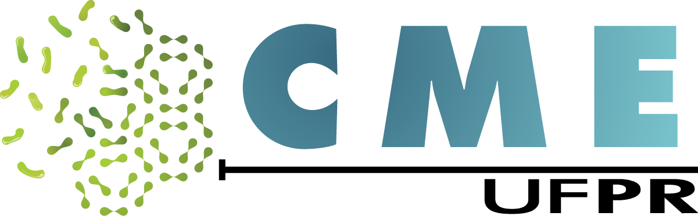

Portal do Governo Brasileiro
Ir para o conteúdo
1
Ir para o menu
2
Ir para a busca
3
Ir para o rodapé
4
Acessibilidade
5
Alto Contraste
6
Mapa do Site
7

Portal UFPR
Ciências Biológicas
Intranet
Office 365
Comunicação
Centro de Microscopia Eletrônica
Pesquisar